page-01 · 9 次响应 · 1.1 分
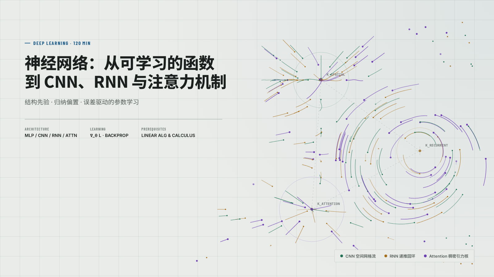
封面完整；浅灰绿网格与机制图。封面标题实际 52px，主题默认 58px。
浏览器记录规划 18 页，交付 18 页；总生成 4.4 分钟，其中 Builder 3.6 分钟。
原始 120 分钟 query，全角色 Gemini low，Google 官方路由，并发 30，mini+aux，notes=notes。未改生成页、未补跑、未换模型。运行检查不等于内容与交互全部通过。
视觉：已浏览全部 18 页整套截图；存在标题字号漂移、中文字体回退，以及第 14 页缩放缺陷，未全通过；内容：已做全套加载、视觉页分步/控件冒烟和代码页执行核对；未穷尽所有数学、拖拽及教学语义。
冻结输入 · 验证统计 · Builder 日志 · Planner/Director 日志

封面完整；浅灰绿网格与机制图。封面标题实际 52px，主题默认 58px。
浏览器记录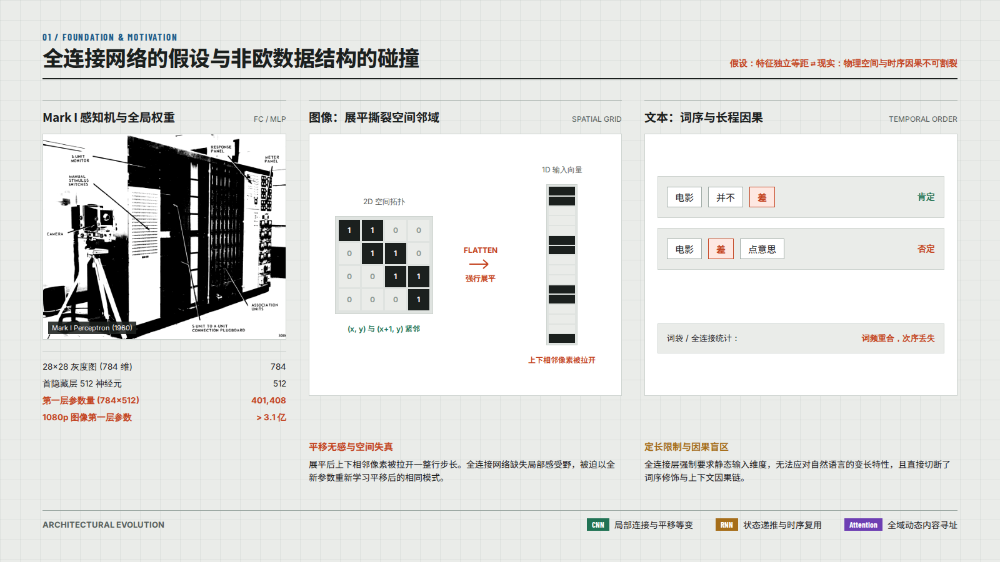
普通页标题被改成 34px；部分中文数据标签落入系统字体。
浏览器记录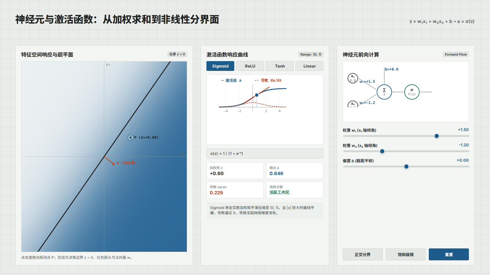
激活函数、预设和滑块冒烟无 JS 错误；标题被改成 32px。
浏览器记录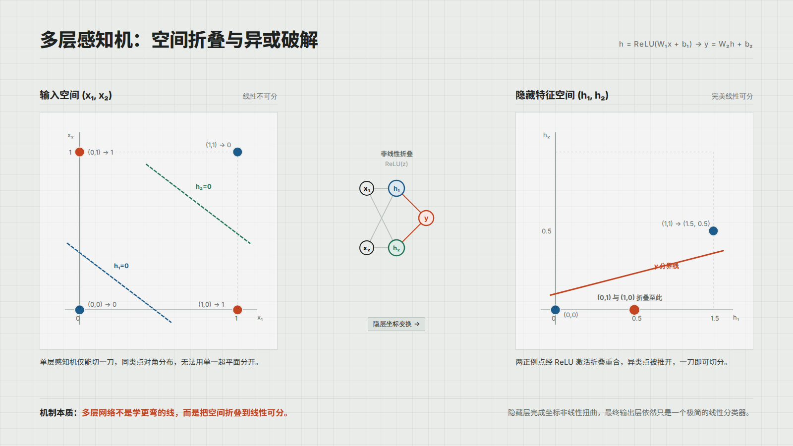
使用主题 38px 页标题；XOR 空间映射图可见，未逐项核算全部图示。
浏览器记录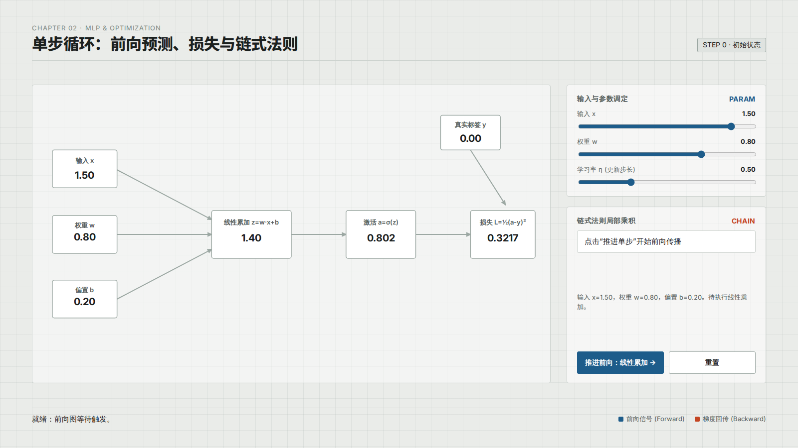
推进、重置和滑块冒烟无 JS 错误；标题被改成 32px。
浏览器记录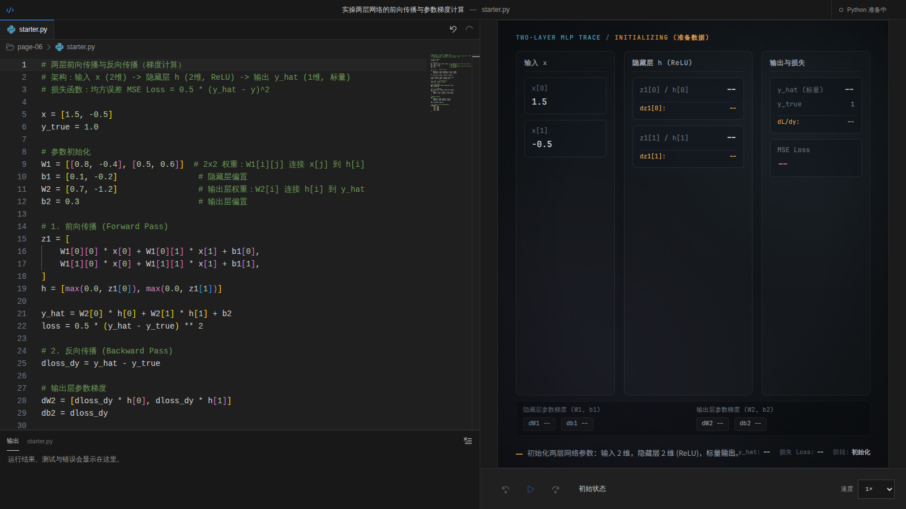
正常代码执行：前向预测/损失、输出层梯度、隐藏层梯度 3 项通过。自检失败复现为 2400 帧保护先于超时触发，而断言只接受超时提示；未修改。代码工作台按原 query 保留独立深色 UI。
浏览器记录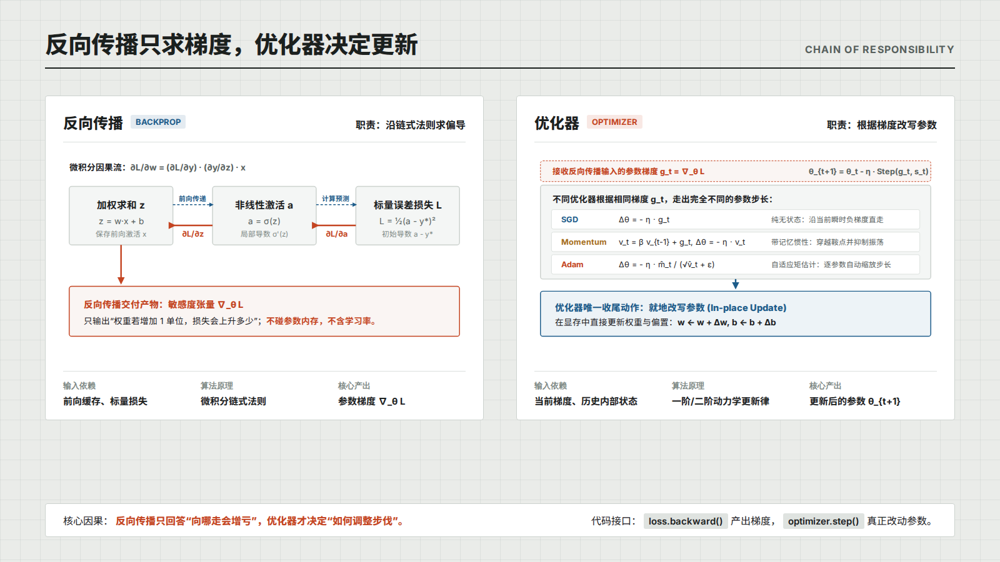
使用主题 38px 页标题；反向传播与优化器分工图可见。
浏览器记录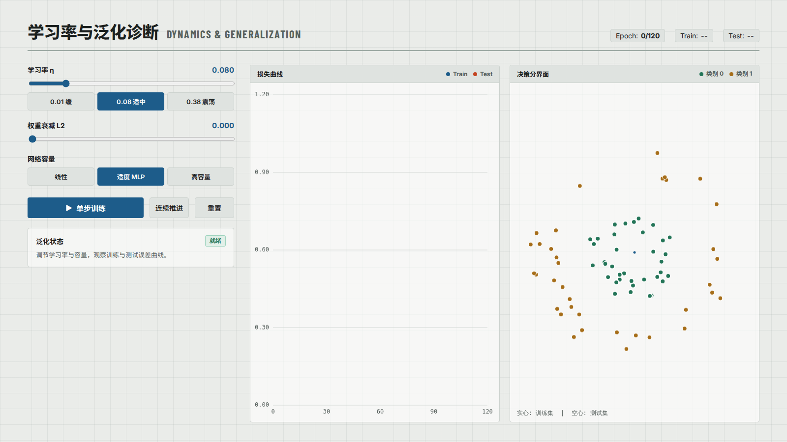
学习率、容量、运行/连续推进/重置及滑块冒烟无 JS 错误；标题被改成 34px。
浏览器记录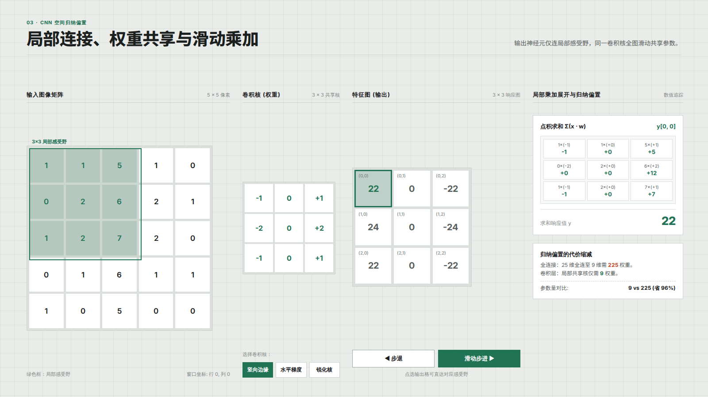
卷积核与步进控件冒烟无 JS 错误；使用主题 38px 页标题。
浏览器记录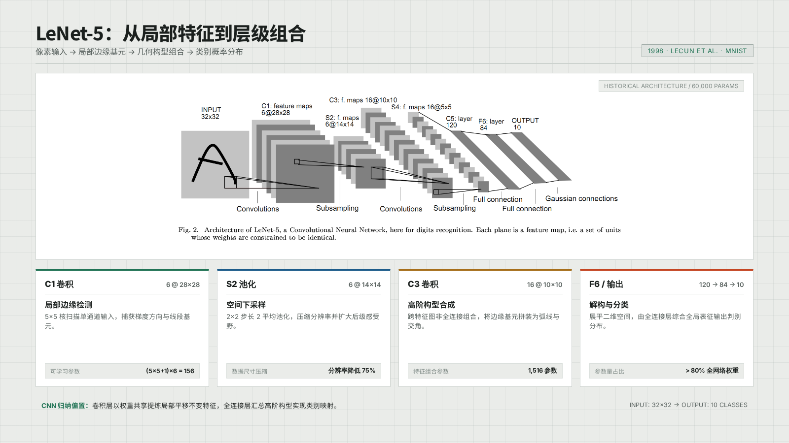
使用主题 38px 页标题，LeNet 架构素材正常加载。
浏览器记录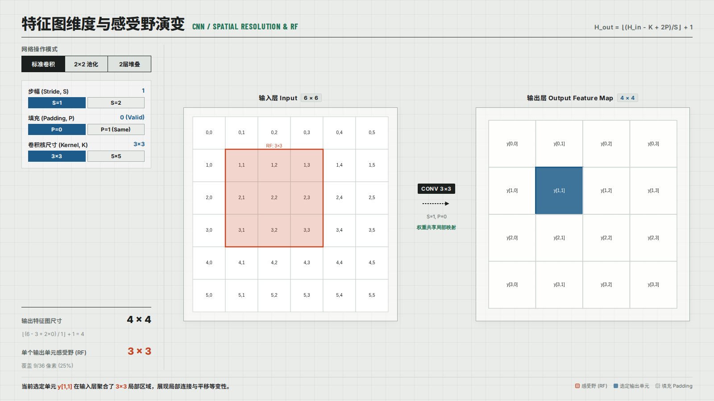
标题被改成 34px。初次控件扫描切到堆叠模式后，6 个参数按钮因有意锁定而超时，不计为功能失败；回到标准卷积页独立核对，6 个参数按钮均可点击并更新选中状态。
浏览器记录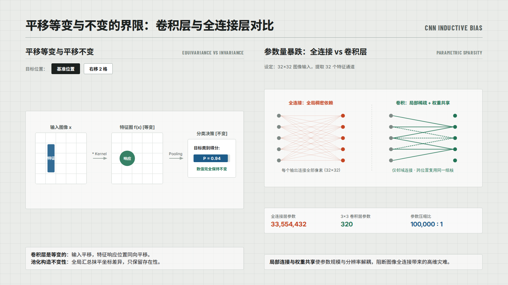
使用主题 38px 页标题；位移控件冒烟无 JS 错误。
浏览器记录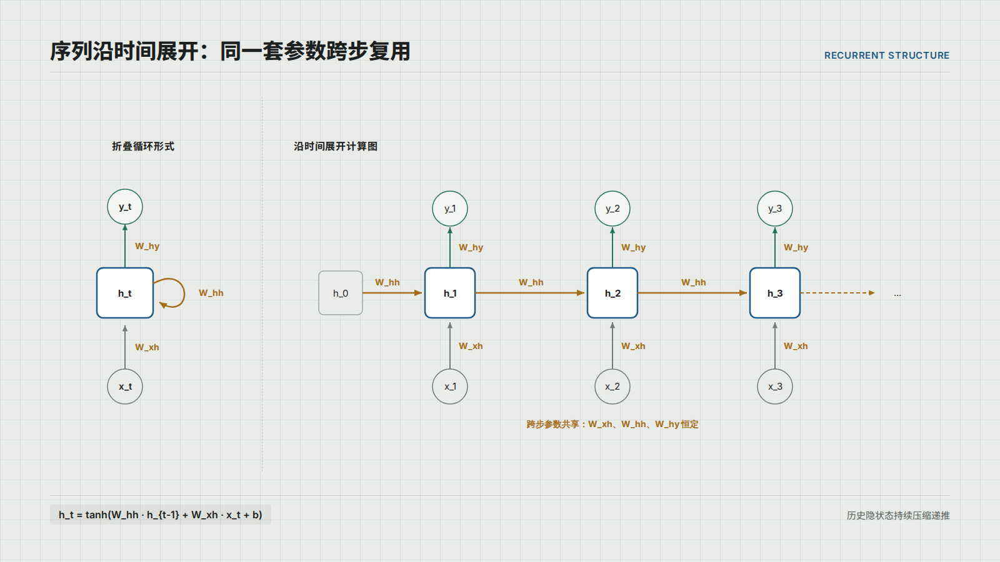
标题被改成 34px；循环与时间展开图可见。
浏览器记录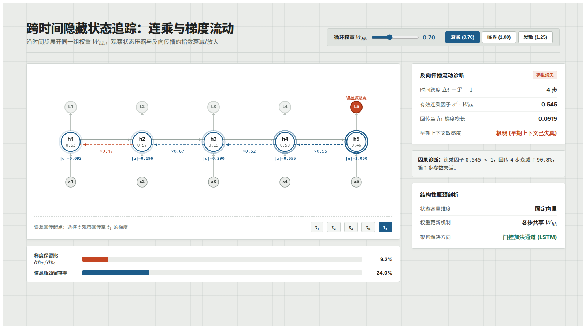
漏引 assets/base.css：800×450 时舞台实际 784×1072.6，未等比缩放。时间按钮误用底盘 data-step，初始被设为 inert，需底盘前进后才解除；标题也被改成 34px。
浏览器记录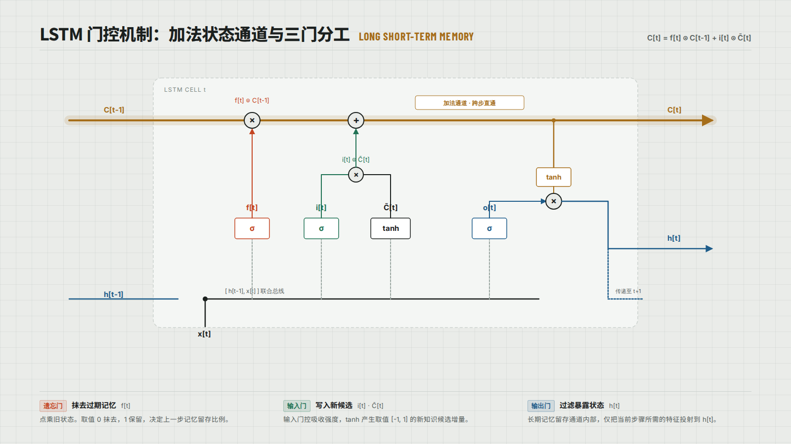
标题被改成 34px；LSTM 门控结构图可见，未穷尽语义正确性。
浏览器记录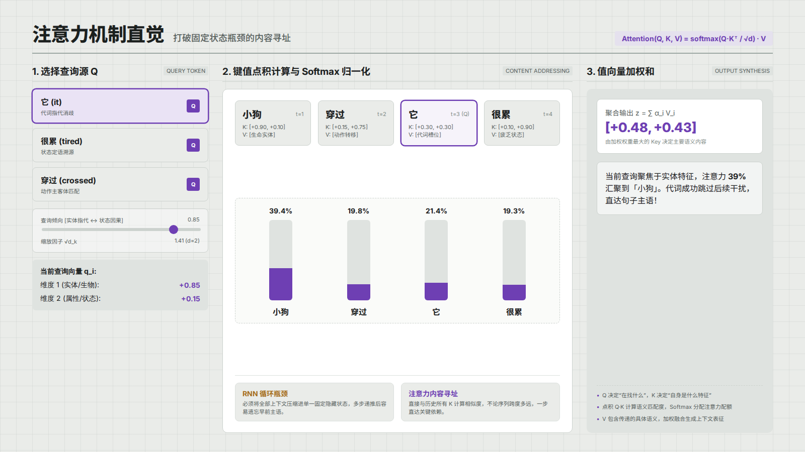
使用主题 38px 页标题；查询词与滑块冒烟无 JS 错误。
浏览器记录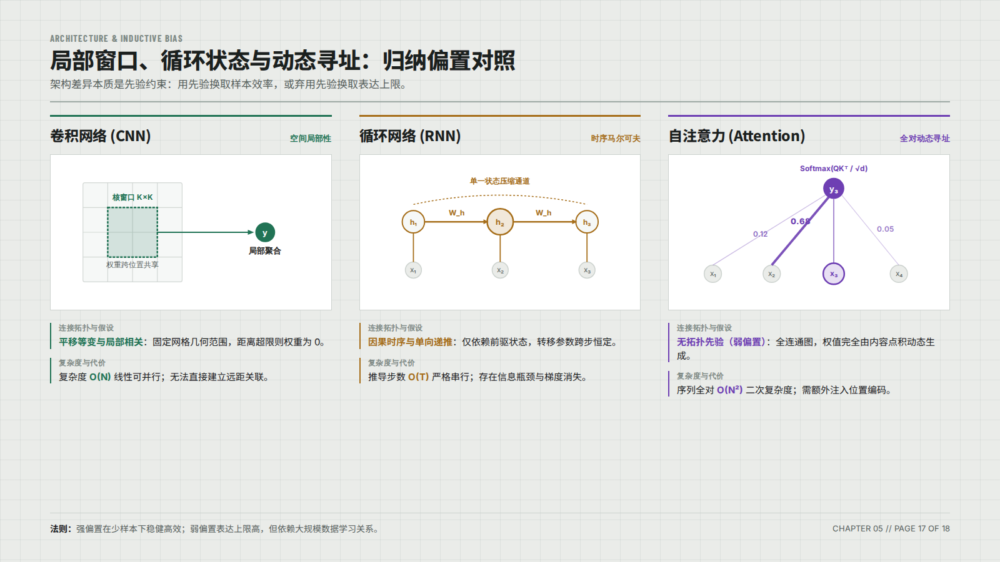
标题被改成 36px；三种归纳偏置的并列结构可见。
浏览器记录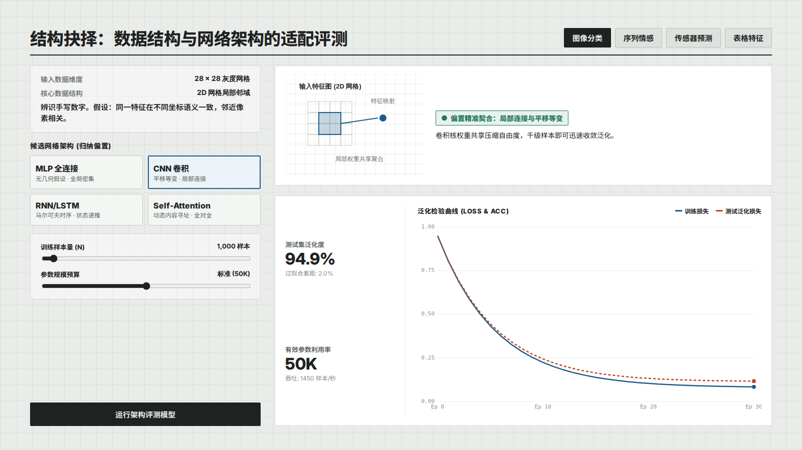
任务、架构、评测按钮及滑块冒烟无 JS 错误；标题被改成 34px。模拟评测不等于真实训练证据。
浏览器记录